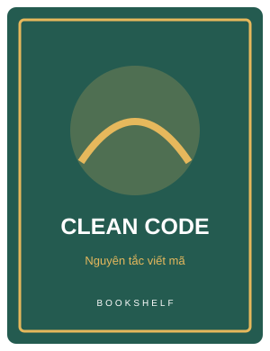
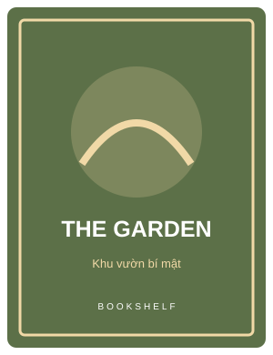

Sách công nghệ
Tập hợp tài liệu lập trình, công nghệ và kỹ năng học tập.
Không gian đọc của riêng bạn
Lưu trữ, quản lý và theo dõi những cuốn sách bạn yêu thích trong một thư viện gọn gàng, dễ sử dụng.
Khám phá thư viện Liên hệ
Bắt đầu từ đây

Tập hợp tài liệu lập trình, công nghệ và kỹ năng học tập.
Lưu lại tiểu thuyết, truyện và những cuốn sách đọc lúc rảnh.
Theo dõi dễ dàng